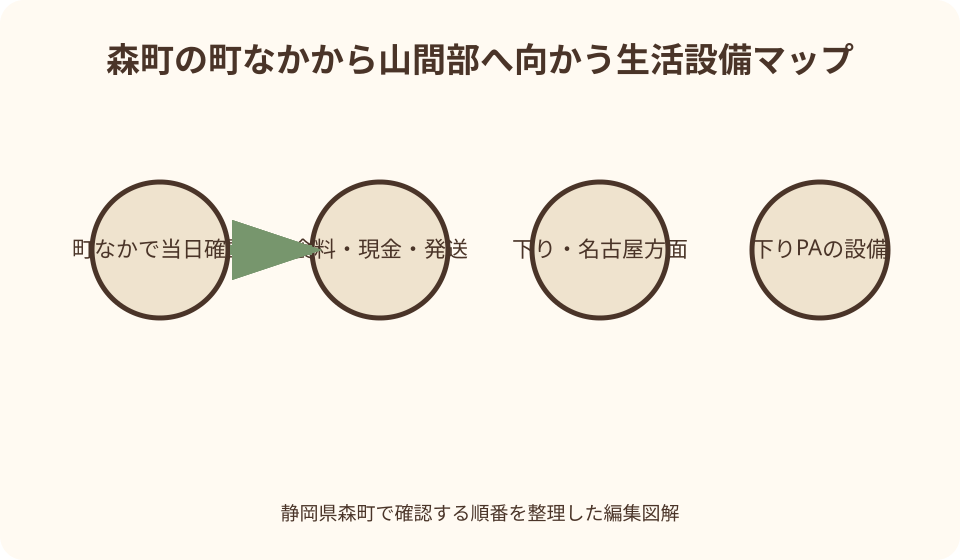
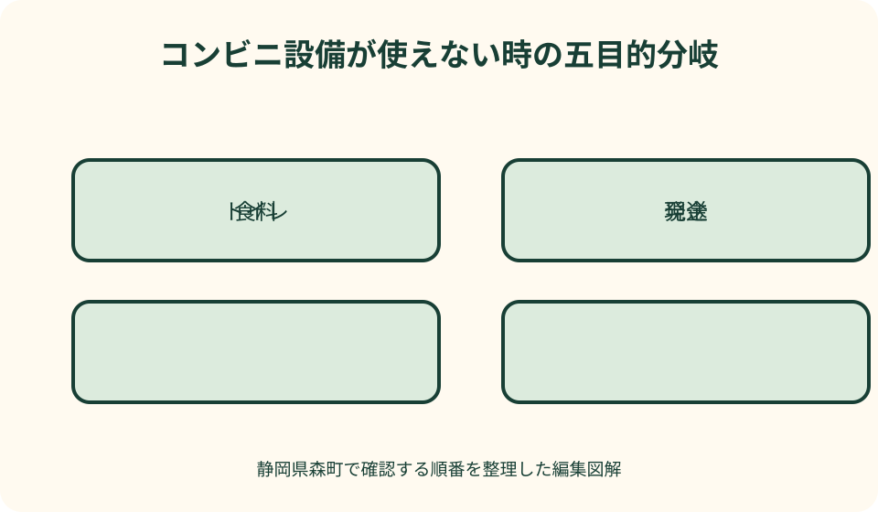

買物・生活設備｜最終確認 2026-08-10
静岡県森町のコンビニ・ATM・24時間設備｜山間部へ行く前の確認ガイド
森町でコンビニを探す目的は、飲み物を買うだけとは限りません。現金を下ろしたい、荷物を送りたい、トイレを借りたい、スマートフォンを充電したいという用事は、同じ店舗でも利用条件が別です。さらに遠州森町PAは上りと下りで設備構成が異なり、一般道から使える範囲も確認が必要です。店舗名や『24時間』の過去表示を信じ切らず、出発当日に必要設備を一つずつ確認し、山間部へ入る前に用事を終える手順をまとめます。

最初に『何をしたいか』を一つずつ書く
コンビニという一語で探すと、必要な設備があるかを見落とします。買物、現金引出し、荷物発送、郵便投函、トイレ、端末充電のどれが必要かを先に書き出します。
食料なら人数、次に買える場所までの時間、冷蔵が必要かを考えます。山間部へ向かう日は水分とすぐ食べられる物を町なかで用意し、目的地の売店を在庫の保証として扱いません。
現金が目的なら、ATMの有無だけでなく、自分の金融機関のカードが使える時間、手数料、保守時間を金融機関公式で確認します。店舗が開いていてもATMが停止する時間はあり得ます。
荷物なら送り状、取扱会社、サイズ、冷蔵・冷凍の可否、締切を確認します。郵便ポストへの投函と宅配便の店頭受付は別のサービスで、回収時刻も同じではありません。
店舗はチェーン公式検索から当日確認する
森町内の候補は、セブン‐イレブン、ファミリーマート、ローソンなど各チェーンの公式店舗検索から探します。一般の地図は位置候補として使い、営業時間や設備を確定する最後の資料にしません。
公式検索では正式な店名、住所、電話、営業時間、設備アイコンを確認します。同じ町名でも北海道など別地域が混ざるため、静岡県周智郡森町まで住所を読みます。
検索結果に二十四時間営業と出ても、臨時休業、改装、設備交換の情報が別欄にないか見ます。出発日と表示更新日が離れている場合や、深夜に確実性が必要な場合は電話で確認します。
電話では『開いていますか』だけでなく、利用したい設備名と到着見込みを伝えます。店員が答えにくい在庫や混雑は保証を求めず、なければ代替品を選ぶ前提にします。
24時間は店舗と設備を分けて読む
店舗の営業表示が二十四時間でも、ATM、宅配受付、店内調理、チケット端末などが同じ時間帯で動くとは限りません。目的の設備ごとに利用時間を見ます。
逆に、PAのトイレや自動販売機など、売店とは別管理の設備もあります。売店の営業時間だけを見て、施設全体が閉まる、または全部使えると結論づけません。
深夜・早朝は搬入、清掃、精算、機器保守と重なる場合があります。入口が開いていても一時的に利用できない設備があれば、店内表示とスタッフ案内に従います。
記事に記した営業時間は将来の利用を保証できません。利用日の公式ページを開き直し、画面保存には確認日時を付けます。家族へ送るときも『当日再確認』を添えます。

ATMは現金の入口であって万能窓口ではない
コンビニATMでは、カード発行元、取引内容、時間帯により利用可否や手数料が変わります。残高照会ができても振込や硬貨取扱いが同じようにできるとは限りません。
旅行中に多額の現金を持つ必要はありませんが、山間部の小規模施設や催しでは現金が必要な場面もあります。必要額を事前に考え、暗い駐車場で財布を長く開かないようにします。
ATMが停止していたとき、別のカードを何度も試す前に画面の案内を読みます。カードが戻らない、取引結果が不明な場合は、機器に表示された運営者連絡先へ問い合わせます。
遠州森町PA下りの公式案内にはE-net ATMが掲載されています。ただし名古屋方面の下り側設備であり、東京方面の上りPAにもあるとは扱いません。カードの利用条件はE-netと金融機関公式で確認します。
郵便ポストと宅配受付を混同しない
郵便ポストは郵便物を投函する場所で、荷物のサイズ確認、料金相談、受取をする窓口ではありません。最終回収後なら翌日以降の扱いになるため、ポスト表示の取集時刻を現地で見ます。
宅配受付は取扱会社、受付可能な荷姿、温度帯、支払方法、当日発送扱いの締切が関わります。段ボールや緩衝材が常に店頭にある前提を置かず、梱包を済ませてから持ち込みます。
NEXCO中日本は遠州森町PA下りに郵便ポストと、デイリーヤマザキでの宅配受付を掲載しています。これは下り側の現行案内であり、上りPAや町内全コンビニへ広げません。
農産物、壊れ物、濡れた道具などは通常荷物と条件が異なる場合があります。発送できると決めつけて現地へ持ち込まず、配送会社の公式案内と受付店へ内容を伝えて確認します。
トイレは借りられる前提ではなく許可と表示を見る
町内コンビニのトイレは、店舗ごとの運用、清掃、故障、防犯上の事情で利用できない場合があります。外から見える看板だけで入れると判断せず、店内表示を見て必要ならスタッフへ声をかけます。
車いす対応、オストメイト対応、ベビーチェアなどは設備名を個別に確認します。一般トイレがあることから必要設備まで推定せず、急ぐ場合は町公式の公共施設案内も候補にします。
PAのトイレは店舗とは別の休憩施設ですが、上下線を取り違えません。一般道からぷらっとパークを利用する場合、駐車場所、歩行経路、開閉時間をPAごとの公式案内で確認します。
災害時や断水時は、通常利用できるトイレも停止する可能性があります。使用禁止表示を越えず、携帯トイレを車に備えるなど、店舗だけへ依存しない準備をします。

スマートフォン充電とEV充電は別物
コンビニで充電ケーブルやモバイル電源を扱う場合がありますが、在庫、端子、貸出サービスの有無は店舗ごとに異なります。自分の端末に合うケーブルを持参するのが先です。
店内の壁コンセントは、客が自由に使える設備ではありません。無断使用をせず、充電サービスが公式に案内される場合だけ、その条件と料金に従います。
スマートフォン用電源と自動車のEV急速充電器は同じ『充電』でも別設備です。遠州森町PA上りのEV急速充電情報はNEXCO中日本の専用ページで確認し、コンビニ設備へ含めません。
通信手段を守るには、満充電の端末、モバイル電源、紙の住所メモを用意します。圏外や停電で決済アプリが使えなくても移動判断ができるよう、公式連絡先を紙にも残します。
遠州森町PA下りで確認できる設備
遠州森町PA下りは名古屋方面です。NEXCO中日本の現行施設ページにはデイリーヤマザキ、E-net ATM、郵便ポスト、宅配サービス、自動販売機、トイレが掲載されています。
掲載時点でコンビニとATM、宅配受付は二十四時間の案内ですが、走行日は同じ公式ページを再確認します。機器保守、臨時休止、取扱変更、品切れまで保証する表示ではありません。
高速道路上で下りPAへ入る車は、進行方向の標識に従います。一般道側からぷらっとパークを使う人は、下り側の入口、駐車区画、歩行経路を確認し、高速道路車両用通路へ進みません。
コンビニがあることは、求める弁当、乳児用品、医薬品、現金、梱包材が必ずある意味ではありません。用途を分け、欠品時に代用できる物を先に考えます。
遠州森町PA上りは下りの設備表を使わない
遠州森町PA上りは東京方面です。現行の上り施設ページにはフードコート、売店、自動販売機、トイレ、EV急速充電器などが掲載されますが、下りのコンビニやATM一覧を上りへコピーできません。
上りで現金引出しや宅配を予定するなら、目的設備が上りページに掲載されるかを利用日に確認します。見つからなければ、スマートICへ入る前の町内店舗で済ませます。
上りと下りは名称も所在地表示も似ていますが、高速道路上で自由に行き来できません。検索結果の写真ではなく、ページ上部の『上り・東京方面』『下り・名古屋方面』を読みます。
スマートICから高速道路へ流入した後はPAを利用できない動線もあります。町から入ってPAで買物をする順番にせず、コンビニ用事を終えてから入口へ向かいます。
町なかと山間部で補給の役割を変える
遠州森駅周辺や主要道路沿いの町なかは、複数候補を公式検索で比較しやすい区域です。アクティ森、三倉方面、キャンプ場などへ進む前に、食料、現金、トイレ、連絡手段を整えます。
山間部では次の店までの距離だけでなく、営業時間、道路規制、携帯電波、暗くなる時刻が判断に影響します。目的地近くの検索結果を見つけても、営業を確認できなければ町なかで完了します。
徒歩の人は店舗までの距離を直線で見ません。歩道、横断場所、夜間照明、荷物の重さ、駅やバスの帰り時刻を確認し、買物のために無理な往復を加えません。
車の人も駐車場の出入口や右折可否を地図で見ます。残り時間が少ないときに道路を横切る転回や、私有地を抜ける近道を選ばず、公式店舗住所へ安全な経路で向かいます。
公共交通利用は帰りの時刻から逆算する
天浜線やバスで森町を巡る人は、コンビニ立寄りを列車や便の間へ無理に挟みません。森町公式の公共交通案内と事業者の当日時刻を確認し、帰りに必要な余裕を先に確保します。
遠州森駅前など駅に近い候補でも、ホームへの移動、踏切、切符購入を含めれば所要時間が増えます。レジ待ちやATM待ちも固定時間ではありません。
大きな荷物を宅配で送る場合、受付後すぐ身軽になれるとは限りません。受付不可なら持ち帰る必要があるため、駅まで運べる重さと梱包にします。
運休や遅延がある日に、別店舗まで歩いて時間をつぶすのは安全とは限りません。駅や停留所の案内に従い、雨、暑さ、暗さを考えて移動を短くします。
災害時にコンビニを避難所扱いしない
大雨、地震、停電時にコンビニの灯りが見えても、指定避難所や常時支援拠点であるとは限りません。避難先と開設状況は森町公式の防災情報で確認します。
災害時はATM、レジ、冷蔵設備、通信、トイレが停止し、食品や水の在庫も変動します。通常時の営業表示を頼りに、危険な道路を買物のため移動しません。
道路冠水、土砂、停電が疑われるときは、店へ電話がつながらないことを営業中と解釈しません。町、道路管理者、気象機関の情報を確認し、安全な場所から動かない判断を優先します。
平時に飲料、携帯食、携帯トイレ、モバイル電源、少額の現金を用意すれば、発災直後に店舗へ集中せずに済みます。森町の防災案内と家庭の備蓄を定期的に見直します。
閉店・休止・欠品に備える代案表
第一候補が閉店または臨時休業なら、その場で近い順に走り回らず、出発前に確認した第二候補へ切り替えます。第二候補までの交通手段と所要の余裕も準備します。
ATM停止なら、必要な買物がカードや別決済で可能か、現金が必要な予定を延期できるかを考えます。暗証番号を何度も入力せず、カード発行元の公式窓口へ確認します。
宅配受付不可なら、荷物を車内に長時間置いて問題ないかを考え、無理なら訪問自体を短縮します。生鮮品や高温に弱い物は、次の店を探す前に品質と安全を優先します。
食料が欠品なら銘柄ではなく、水分、塩分、アレルギー、保存性など目的を満たす代用品を選びます。医療上の制限がある人は、旅行前に必要品を持参し、店舗在庫へ依存しません。
良い点
森町には町なかのコンビニ候補に加え、新東名のPA設備があります。車、鉄道、バスの経路に合わせて、出発前に立寄り候補を選べる点は便利です。
チェーン公式の店舗検索は、住所、営業時間、設備を店舗単位で確認する入口になります。名称が似た店や別地域を避け、電話へ進める点も実用的です。
遠州森町PA下りは、公式ページ上でコンビニ、ATM、郵便、宅配を同じ施設内に確認できます。名古屋方面の走行者には、休憩と用事をまとめる候補になります。
これらの利点は、当日の営業・稼働と進行方向を確認した場合に成り立ちます。店舗やPAがあるという事実だけで、必要な商品や設備の利用まで約束されません。
注文したい点
検索地図の『営業中』表示は便利ですが、ATM保守、宅配締切、トイレ休止まで一画面で分かりません。サービスごとの公式確認先を利用者がたどる必要があります。
PAは上下線で設備が違うのに、同じ名称が検索結果に並びます。方向と一般道側入口、スマートIC流入後の動線を、設備一覧の近くでさらに明確に示してほしいところです。
町内店舗の公式ページでも、トイレ利用、モバイル電源、宅配温度帯などが非掲載の場合があります。必要性が高い設備は、利用者が電話で短く確認できる表示が望まれます。
一方で、在庫や非常時対応を店舗へ保証させることはできません。利用者側も、第二候補、持参品、予定短縮を用意し、店舗スタッフへ過度な負担をかけない使い方をします。
代案・結論
結論は、店を一軒選ぶ前に必要設備を分け、町なかを離れる前に用事を終えることです。公式店舗検索、設備詳細、電話、道路・交通情報の順に確認します。
深夜や早朝に必要なら、二十四時間という文字だけでなく、目的のATMや宅配がその時間に動くかを確認します。不明なら前日の日中に済ませます。
PAを使う場合は上り東京方面、下り名古屋方面を合わせます。下りのコンビニやATMを上り側の代案にせず、スマートICへ入る前の町内候補も準備します。
今日できる行動は、目的別に『食料・現金・トイレ・発送・通信』の五欄を作ることです。第一候補、確認日、使えない時の代案を書けば、現地で検索を繰り返さずに済みます。
大石の視点
私は、森町の実家や土地へ通う家族にとって、コンビニの位置は単なる便利情報ではなく、現地管理を続けられるかを見る生活動線の一部だと考えます。
売ると決めていない実家でも、最寄り候補、徒歩・車の経路、営業時間の確認先、ATMや宅配の代案を実家カルテに残します。高齢の家族には紙でも共有します。
物件を見るときは店までの距離だけでなく、歩道、夜間照明、道路の横断、バスや駅へのつながりを現地で確認します。近いという広告表現と、実際に使いやすいことは同じではありません。
不動産の査定額を急ぐ前に、接道、境界、登記名義、農地や山林の管理と一緒に、買物や現金確保の動線を記録します。暮らしの弱点も代案と組にして伝えるのが誠実です。
確認メモを更新して次の訪問へつなぐ
訪問後は、利用した店名、日付、設備、実際の経路を記録します。ただし次回も同じ条件とはせず、メモの先頭に公式URLと再確認欄を置きます。
閉店や設備変更を知ったら、古い候補へ線を引き、確認日と新しい代案を書きます。家族のナビや共有地図に古いピンが残っていないかも見直します。
レシートや送り状には個人情報が含まれます。物件資料と一緒に無造作に置かず、必要な記録だけを転記し、不要なものは適切に処分します。
森町でのコンビニ確認は、店舗数を競うランキングではありません。必要な設備を正しい方向で当日に確かめ、使えないときに山奥へ探しに行かないための準備です。
公式情報・確認先
掲載内容は次の一次情報を基礎に整理しました。営業、料金、催し、交通は変わるため、出発前または手続き前にリンク先で最新情報を確認してください。
- 暮らし・手続き（静岡県森町、2026-08-10確認）
- 公共交通（静岡県森町、2026-08-10確認）
- 防災情報（静岡県森町、2026-08-10確認）
- 観光（静岡県森町、2026-08-10確認）
- 施設・サービス案内 遠州森町PA上り（NEXCO中日本、2026-08-10確認）
- 施設・サービス案内 遠州森町PA下り（NEXCO中日本、2026-08-10確認）
- 森町宮の市店（ファミリーマート、2026-08-10確認）
- 遠州森町（ローソン、2026-08-10確認）
- セブン‐イレブン 森町遠州森駅前店 共同出張所（セブン銀行、2026-08-10確認）
- E-net ATM（株式会社イーネット、2026-08-10確認）